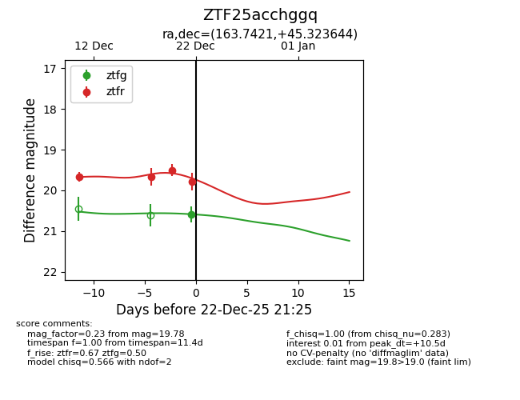
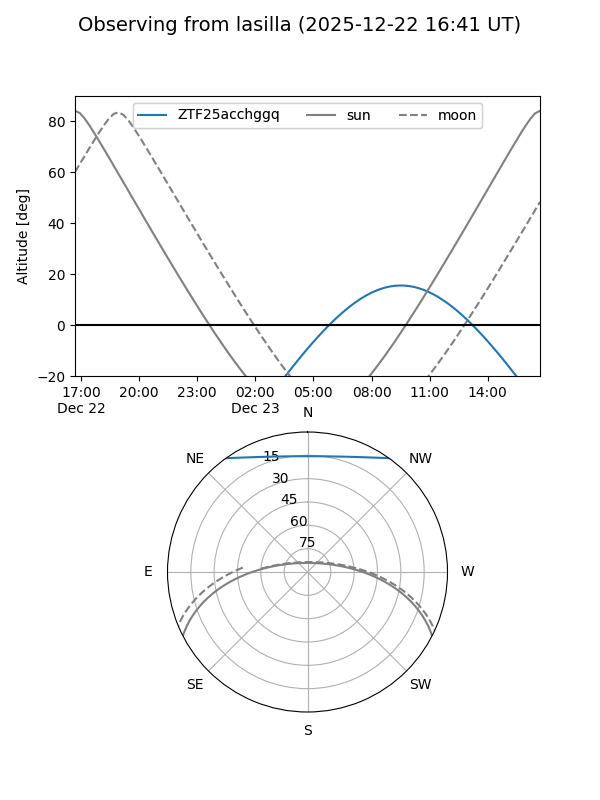
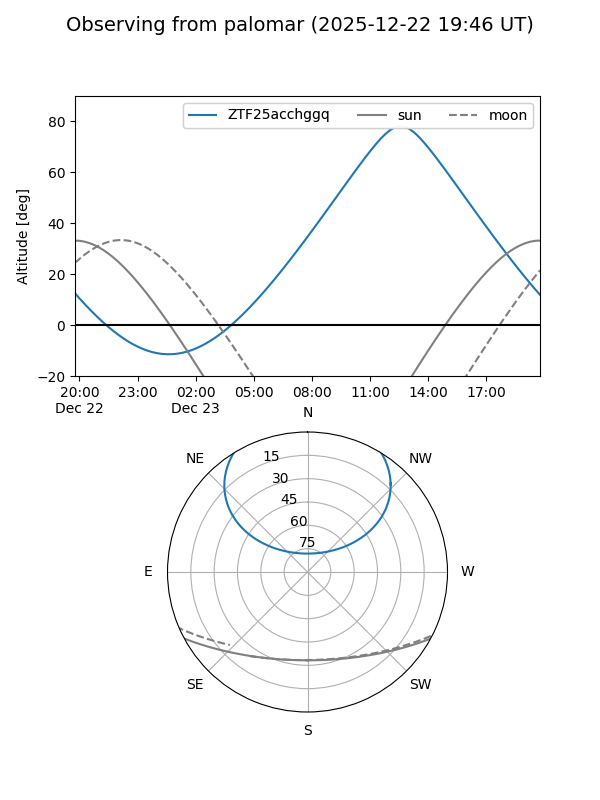
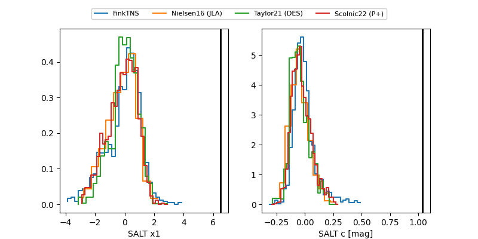

ZTF25acchggq
Target ZTF25acchggq at 2025-12-22 21:26
Aliases and brokers:
FINK: fink-portal.org/ZTF25acchggq
Lasair: lasair-ztf.lsst.ac.uk/objects/ZTF25acchggq
ALeRCE: alerce.online/object/ZTF25acchggq
alt names
ZTF25acchggq (ztf,fink_ztf)
Coordinates:
equatorial (ra, dec) = 163.7421,+45.32364
equatorial (HMS+DMS) = 10:54:58.11,+45:19:25.12
galactic (l, b) = (167.0542,+60.56546)
Flags:
Photometry:
last ztfg=20.59, ztfr=19.78
1 ztfg, 4 ztfr detections
Lightcurve

Visibility


Additional plots
